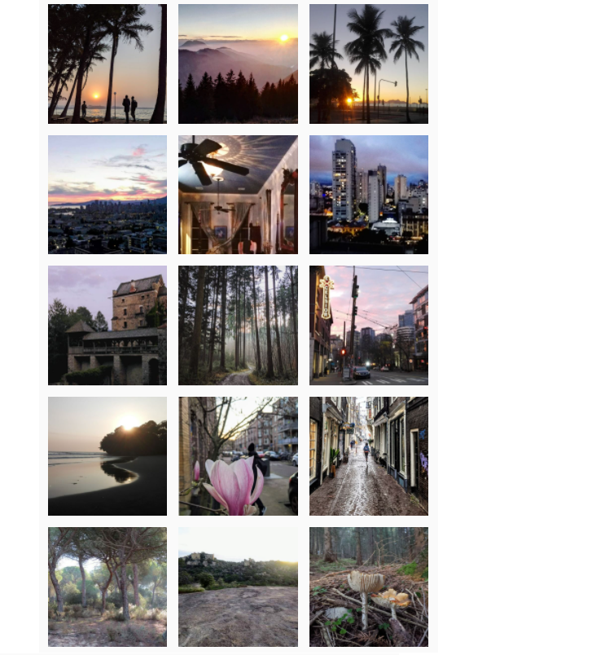
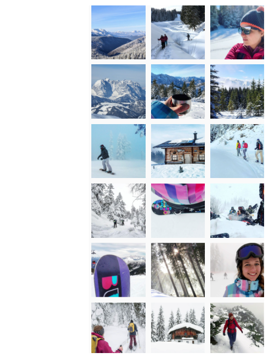

The goal of this project is to create aesthetically looking instagram posts. Having hundreds or thousands of photos, this is a tedious task when done by hand. In this project I set up a machine learning pipeline to do the work for me. The essential ingredients for a pleasing combination of photos are content and colour. We use the information on those to find sets of images which combined are candy to the eye. The three major steps in the set up are:
- Get the content of an image via multiclass image classification.
- Get the dominating colours via clustering.
- Use these inputs to generate a sequence of appealing images.

1. Classify the content
The goal of the image classification is to gain information on the content of the image to control in which group of posts it appears. For instance a picture of a tropical beach next to a snowy mountain hut seems clashing, even if the colour scheme was harmonic. Considering the fact that most of my pictures are travel and outdoor pics, the image classification model will fit on the following classes: palmtrees, snow and neither of those. This is a first order approximation but sufficient for now. The data are cleanly separable as well, palmeras en la nieve have not been in the spotlight of my camera yet.
1.1 Image Data Collection
Taking my set of favourite pictures, only around 10% contain palmtrees and 5% fit the content "winter paradise". To avoid imbalanced training data, I scrape and clean the top palmtree images from my favourite photo sharing social media platform. Finding images which fit my definition of winter paradise was a bit less trivial and required more cleaning afterwards. The winter pictures I usually take are mountain or forest photos. Hence I scraped images with the hashtags snowboarding, backcountriskiing, winterwald and snowshoeing. The final dataset consisted of roughly 2000 images, 25% of which contained palmtrees, 25% in the winter wonderland category and the remaining 50% fell into neither class. The distributions of scraped and self-made photos are not fully identical but this is neglected in training and testing. After all, top posts with different style also influence the style of my future images.
1.2 Data Pre-processing
TO have the algorithm focus more on the essential part, some images are cropped such that the desired object (usually the palmtree) is dominant in the image. Furthermore it turned out that a non-negligible part of scraped palmtree images contained white frames. Considering that the competing category was snow-dominated, those had to be cropped off.
1.3 Choose the best Model
A set of 2000 images with quite non-uniform content is too small to reach a great accuracy on a fresh model. The achieved accuracy on the validation set of a model with three convolutional layers was around 70-75%. Which is not totally bad but taking a pre-trained network will do better. Indeed, a pre-trained (on the imagenet dataset) MobileNetV2 reached an accuracy of around 90%. Misclassification between palmtree and winter wonderland images should be suppressed since its content clashes in general. Closer inspection showed that a misclassification between those two classes basically never happened. Misclassified images were mostly the ones were the object was only a minor part of the image. For our purposes, this is fine. The prediction of the neural network is written to the database.
2. Extract the information on colours
This step is equivalent to the first part of this project. The five dominant colours per image are calculated with KMediods on CIELAB-colour space and the information is written to the database.
3. Find the perfect combination
The final step retrieves the content and colour information of the images from the database and uses other algorithms to find appropriate sequences.

Information used: Colour
Method: KMeans clustering
Details:

Information used: Content of class "snow" and colour
Method: Filter by class, KMeans clustering
Details: